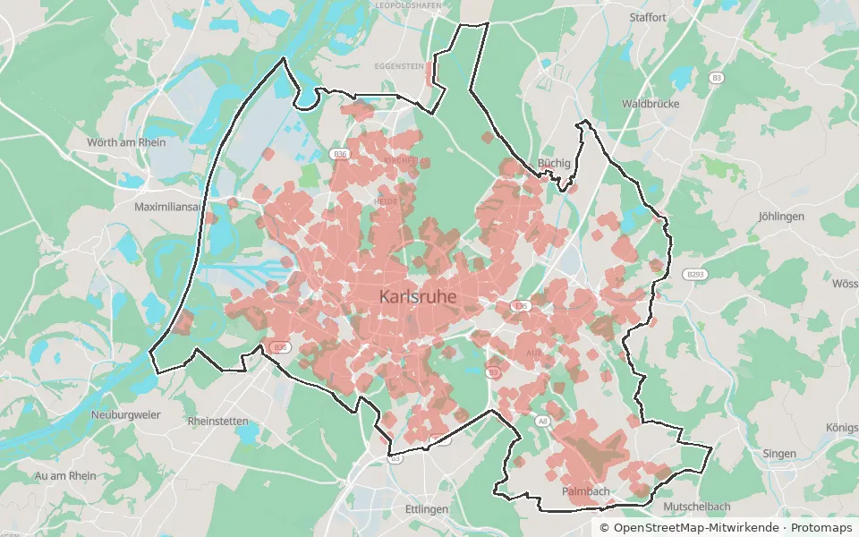
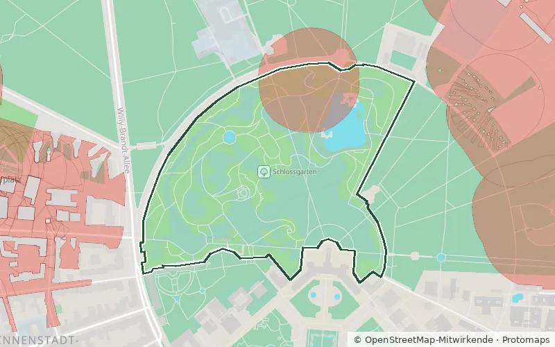
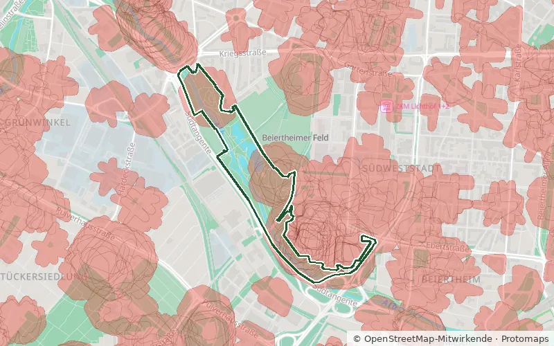
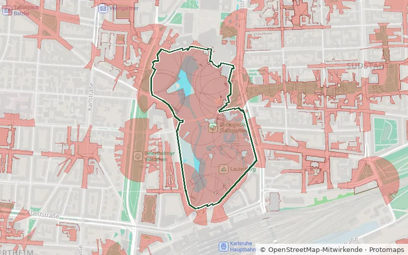
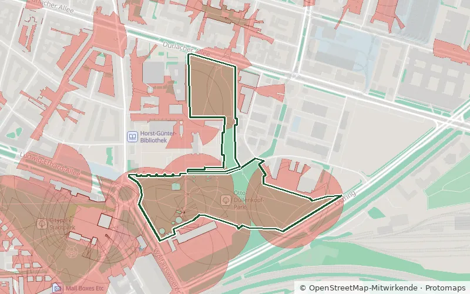
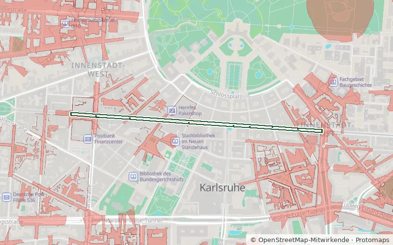
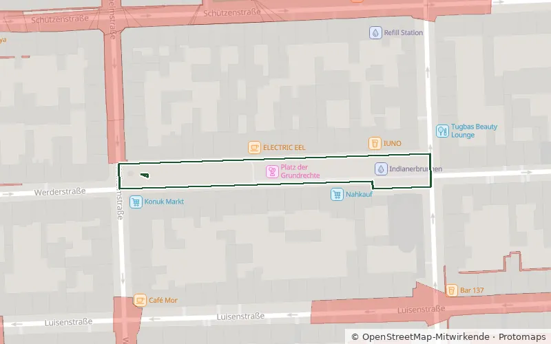

In Karlsruhe ist öffentliches Kiffen auf 31 km² verboten, das sind 18,0 % der Stadtfläche von 173 km². Grund sind 2 212 Einrichtungen wie Schulen und Spielplätze: In ihrer Sichtweite, bis 100 Meter vom Eingang und ohne Gebäude dazwischen, verbietet § 5 KCanG den Konsum. Dazu kommen die Fußgängerzonen von 7 bis 20 Uhr und überall die Gegenwart von Minderjährigen.
Fast ein Drittel der Stadt ist Wald, vor allem der Hardtwald nördlich des Schlosses (30 % der Stadtfläche), und dort liegen nur 8,4 % in einer Zone. Ohne den Wald gerechnet sind es 22,1 %.

Woher die Zonen in Karlsruhe kommen
| Einrichtung | Anzahl | Zonenfläche |
|---|---|---|
| Schulen | 124 | 4,6 km² |
| Kitas und Kindergärten | 195 | 4,4 km² |
| Kindertagespflege | 21 | 0,4 km² |
| Spielplätze | 670 | 12,5 km² |
| Kinder- und Jugendeinrichtungen | 58 | 1,2 km² |
| Sportstätten | 1 144 | 18,6 km² |
Jede Art für sich gezählt, Überlappungen also mehrfach. Anbauvereinigungen nur, soweit in OpenStreetMap eingetragen.
Die meisten Zonen gehen auf die 1 144 Sportstätten zurück, danach auf die 670 Spielplätze.
Auf Spielplätzen, Bolzplätzen und Ballspielfeldern verbietet die Polizeiverordnung der Stadt außerdem Rauchen und Alkohol, bis zu 5.000 Euro (Straßen- und Anlagenpolizeiverordnung, § 5).
Schlossgarten und Parks
Im Schlossgarten liegen 14 % der Fläche in einer Zone, um einen Spielplatz am Nordrand; die Gartenordnung hat keine eigene Regel zu Rauchen oder Cannabis (Gartenordnung). Der Schlossplatz davor liegt außerhalb jeder Zone (0 %).

In der Günther-Klotz-Anlage sind es 61 %, um drei Spielplätze, vier Sportanlagen im Park und viele weitere am Rand. Beim Fest, das dort jeden Sommer stattfindet, ist Cannabis nach der Hausordnung auf dem ganzen Gelände nicht erlaubt (Haus- und Besucherordnung).

Der Zoologische Stadtgarten liegt fast ganz in einer Zone (87 %), mit 13 Spielplätzen auf dem Gelände; dort gilt ohnehin das Rauchverbot für Zoos (siehe Rauchverbote in Baden-Württemberg). Der Otto-Dullenkopf-Park kommt auf 89 %, mit sechs Sportanlagen und einem Spielplatz.


Innenstadt und Werderplatz
Die Fußgängerbereiche hat die Stadt in einer Satzung mit Lageplänen abgegrenzt, darunter die Kaiserstraße, Marktplatz, Ludwigsplatz, Europaplatz, Stephanplatz und Werderplatz, in Durlach die Pfinztalstraße; der Schlossplatz gehört nicht dazu (Satzung über Sondernutzungen in den Fußgängerbereichen). Dort gilt von 7 bis 20 Uhr Konsumverbot; blau sind die Fußgängerbereiche aus OpenStreetMap.
Von der Kaiserstraße liegen außerdem 57 % in einer Sichtweiten-Zone, vom Europaplatz fast alles (99 %), vom Kronenplatz 77 %. Marktplatz (0 %) und Ludwigsplatz (0 %) liegen außerhalb der Zonen.

Auch der Werderplatz in der Südstadt liegt außerhalb der Zonen (0 %), ist aber Fußgängerbereich. Von April bis Oktober ist dort außerdem montags bis samstags von 11 bis 20 Uhr Alkohol verboten (Polizeiverordnung Werderplatz).

Hochschulen
Hochschulen sind nach § 5 KCanG keine Verbotsorte. Die Hausordnung des KIT verbietet das Rauchen in den Gebäuden; eine Regel zu Cannabis haben wir nicht gefunden. Die Pädagogische Hochschule liegt zu 71 % in einer Zone, die Hochschule für Musik zu 43 %.
Was sonst noch in Karlsruhe gilt
Seit Juni 2026 ist gerauchtes Cannabis in Baden-Württemberg auch auf Spielplätzen, Schulgeländen und Kita-Grundstücken, an allen Haltestellen und in Freibädern und Zoos verboten, bis zu 200 Euro (Land Baden-Württemberg).
Einen Bußgeldkatalog für das Cannabisgesetz hat das Land nicht; das Gesetz erlaubt bis zu 30.000 Euro. Eigene Verbotszonen für Cannabis hat Karlsruhe nicht (Stand 27. November 2026).
Häufige Fragen zu Karlsruhe
Wo darf man in Karlsruhe kiffen?
Nach § 5 KCanG außerhalb der roten Flächen, etwa im Hardtwald (9 % in einer Zone) und auf dem Schlossplatz (0 %). Tagsüber nicht in Fußgängerbereichen wie der Kaiserstraße, nie in Gegenwart von Minderjährigen, gerauchtes Cannabis außerdem nicht an Haltestellen, auf Spielplätzen, Schulgeländen und in Freibädern. Weiß heißt nicht sicher erlaubt: Hecken, Bäume und fehlende Einrichtungen kennt die Karte nicht.
Darf man im Schlossgarten kiffen?
Der größte Teil des Schlossgartens liegt in keiner Sichtweiten-Zone, und die Gartenordnung verbietet es nicht. In Gegenwart von Kindern und Jugendlichen gilt das Verbot überall.
Wie genau ist das?
Täglich aus OpenStreetMap gerechnet, mit Gebäuden als Sichthindernis; die Zahlen hier sind vom 27. November 2026. Eine Orientierungshilfe, keine Rechtsauskunft (wie gerechnet wird).
Fehlt eine Einrichtung? Korrekturen in OpenStreetMap stehen am Tag darauf auf der Karte; bitte nur eintragen, was es vor Ort gibt.